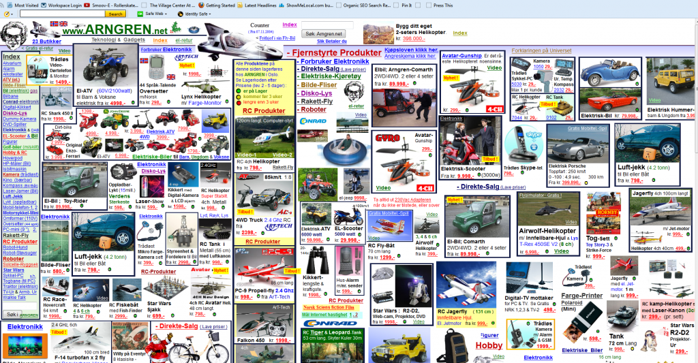
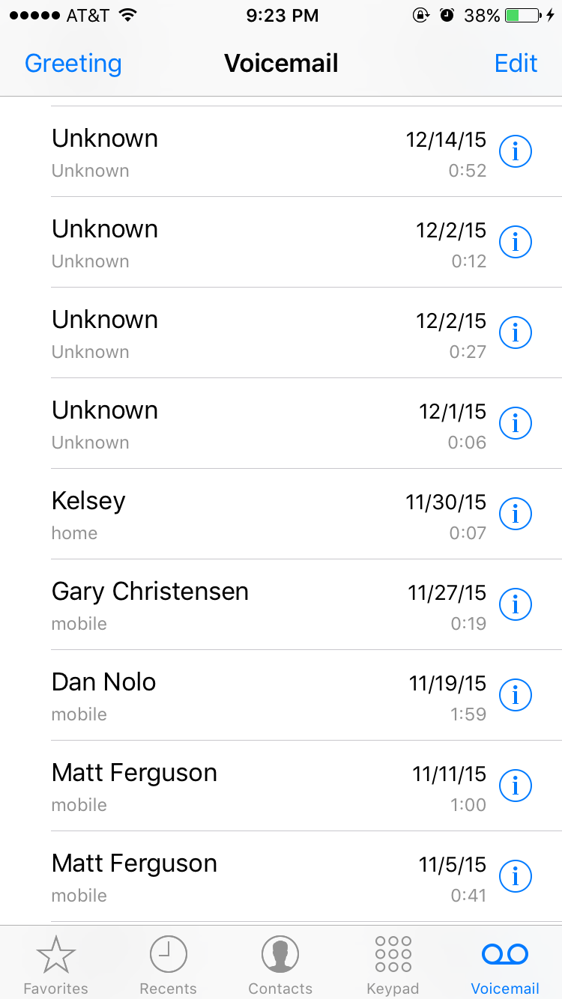
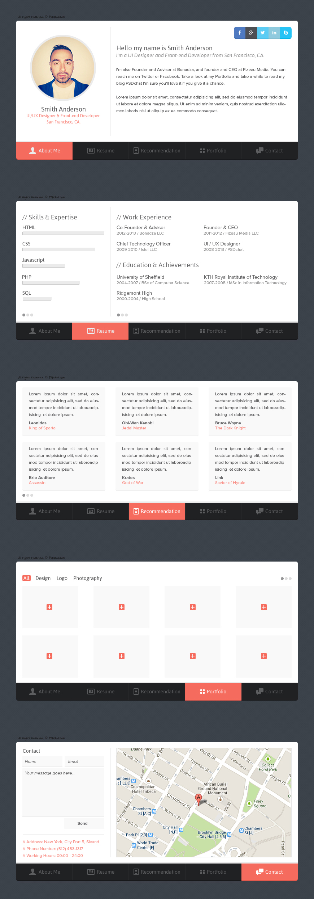
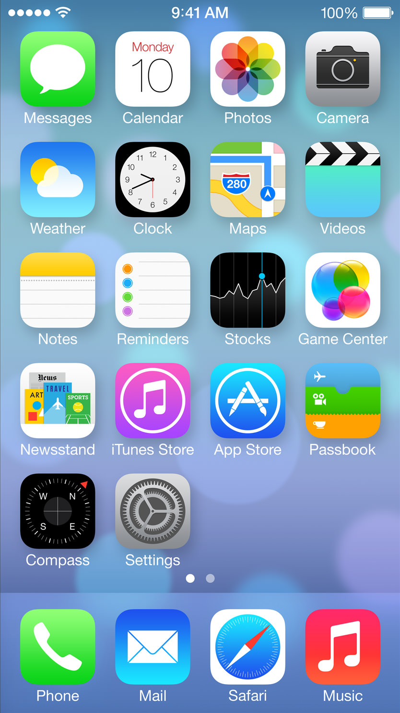

Consistency in Design
When you started your car this morning, did you look at the ignition when you stuck the key in?
Or when you pull out your phone to dial a number, do you look at each number?
If you're like me, you've done things on autopilot before. Whether it's driving, typing, or turning on your washer, you've done something without looking or concentrating. You could do these things in your sleep because they are so familiar to you. It's almost natural.
And that’s the power of consistency. It's consistency that allows you to do things without thinking. It almost acts as a shortcut.
Imagine if these things were different every time you did them, if the buttons moved around on your keyboard, or the placement of the ignition moved in your car. You would need to actively concentrate on what you're doing. You would get annoyed. You could never adapt to the system.
Consistency is crucial to any design. Consistency creates a certain rhythm.
What Needs To Be Consistent?
You need to maintain consistency across a few different areas, including:
- Common Design Conventions
- Internal consistency
- Brand Consistency
Common Design Conventions refers to the universal associations people have. These are the unwritten rules or standards that everyone understands.
For example, the floppy disk icon has come to mean Save. An 'X' means close. Green means good. Whether it's an icon, symbol, or color, there are these unwritten standards that everyone recognizes.
You need to make sure your design respects these existing external expectations. It isn't a good idea to be different for the sake of being different.
If you challenge too many conventions, people will abandon the design. Changing preconceptions is difficult and it's better to take the shortcut and use the standards that have been developed over the years.
Internal Consistencies
When we talk about internal consistency, we're talking about using the same positioning, fonts, colors, and other stylings throughout the design.
Radical shifts in style within the same design can be jarring and make the whole design feel ‘off’ and disjointed.
Below is an extreme example of inconsistency: http://www.visualmess.com

You want margins to be the same across all pages in an E-book. You want the rows of a table to be the same height. Consider the Voicemail interface of the iPhone:

Imagine if the fonts were different, or if the heights were different, or the backgrounds were different.
Common Novice Mistakes
Having different alignments, fonts, colors, and spacing from page to page.
A Note on Consistency & Contrast
The principle of consistency can seem to be opposed to contrast. If things are supposed to be the same, how can you set anything apart.
Again, there needs to be a balance here. How do you integrate consistency and contrast? By making the contrasting elements consistent.
For example, you can create a tip box style that sets apart useful tips. Or you can have a quote style for all the quotes.
In web design, you know the page you are on in a design through the use of hovers. look at the interface design below. Notice how there is consistency, but also contrast that let people know where they are at.

When both contrast and consistency exist in harmony, magic happens.
Lets look at a real life example. Think about the app icons on an iPhone. There are certain standards that all developers have to follow. The icons all have to be the same size, rounded corners, and use the same font for the app name - but developers can still make their apps stand out through symbols and colors.

When it comes to brand consistency, you want to use the exact same colors, fonts, and aesthetic across all channels. Your website, business card, and letterhead should all match and present a united, cohesive representation of your business.
This can be difficult if you have multiple individuas working on different campaigns. That's why many companies create style guides. Style Guides allow a company to set guidelines for all designs no matter if they are digital or print. They can set the colors, fonts, and other stylistic elements in a single document. Everyone from Microsoft to Facebook uses these. You can browse these other company's style guides here
Maintaining brand consistency doesn't mean you can't add visual flair to individual designs. Consider the Universal Studios logo and what they do to match their films with a particular film.
Common Amateur Mistake
One of the most common mistakes when it comes to consistency is 'getting inspired' by different designs and trying to mix and match, or to pick and choose, different elements from different designs.
Do this and you'll end up with a 'frankendesign'. A mood board can help give you ideas. Browsing Behance or Dribbl can give ideas.
But once you get into the creation phase pay attention to consistency.